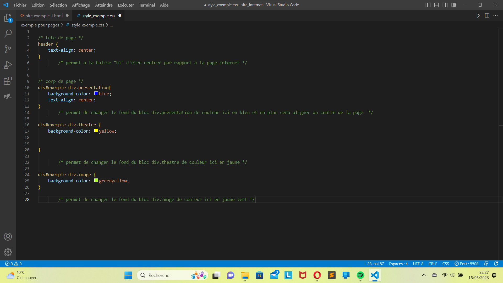

C'est quoi le CSS ?
CSS signifie Cascading Style Sheets , il permet de créer des pages web à l'apparence soignée. Les documents en question sont des fichiers texte structurés avec un langage de balises HTML est le plus connu de ces langages , le CSS permet de présenter un document à l'utilisateur ce qui signifie convertir ce document dans une forme utilisable par le public visé .Les navigateurs, tels Firefox, Chrome, Safari ou Edge sont conçus pour présenter visuellement des documents, que ce soit sur l'écran d'un ordinateur, un vidéo-projecteur ou une imprimante.
Comme vous le voyez le rendu du site est magnifique , ne vous étonnez pas trop car c'est moi qui l'ai fait.
Comment ça marche ?
Comme nous l'avions vu sur la page dédier a HTML , le CSS est très utile si nous ne voulons pas rendre un site sans âme au prof .Après avoir compris ce que c'etait le CSS dans les grandes lignes , voyons maintenant comment nous pouvons mettre en place et créer un début de beauté à votre site internet pour l'école . C’EST PARTI

Prenons pour base le début de site sans âme que nous avons commencé à coder
Commensons par nommer nos balises utile.
Ensuite créons un fichier CSS pour modifier ces differents bloc
Voici ce que ça donne

voila comment marche le panel de CSS pour les débutant ensuite vous pouvez vous amuser a changer la taille des blocs en utilisant WIDTH pour créer un site bien ranger.